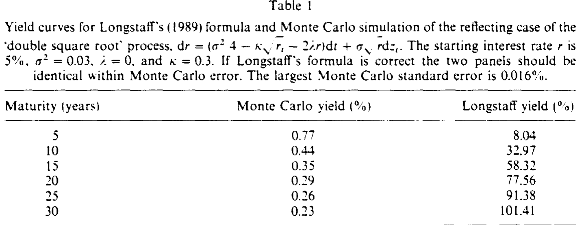
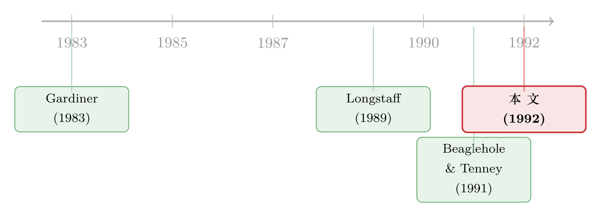

漂亮的闭式解，解的却是另一道题——一桩利率模型的边界条件公案
本文读的是 Beaglehole & Tenney (1992, JFE)：Longstaff (1989) 那个广受引用的「双平方根」利率模型，给出了一个漂亮的零息债券闭式定价公式 \(P=A\exp(Br+C\sqrt r)\)。两位作者用一次蒙特卡洛模拟和一行边界条件的代数，证明这个公式根本不是它所声称要解的那道定价问题的解——错在一个被悄悄忽略掉的反射边界条件。更妙的是，他们顺手指出：这个公式其实是另一个模型经济（不带反射的 Ornstein–Uhlenbeck 状态变量）的正确解。
1 引言：闭式解的诱惑
做利率模型的人，心里都装着一份对「闭式解」（closed-form solution）的执念。
原因不难理解。利率衍生品的定价，归根结底是去解一个抛物型偏微分方程（partial differential equation, PDE）；能解出一个干净的解析表达式，意味着你不必每次都去跑数值差分或蒙特卡洛，意味着比较静态、对冲参数、校准全都可以一笔写下来。所以从 Vasicek 到 Cox–Ingersoll–Ross，凡是能写出 \(P(r,t,T)=A(\tau)\exp(B(\tau)\,r)\) 这种「指数仿射」（exponential-affine）形式的模型，都会被反复引用、反复使用。一个新的闭式解，几乎天然地自带光环。
Longstaff (1989) 就是这样一篇论文。他在一个对数效用的一般均衡框架里，推出了一个「双平方根」（double square root）的短期利率过程——它的漂移项里带着 \(\sqrt{r}\)，是当时少见的非线性利率模型。更诱人的是，他声称为这个模型解出了零息债券的闭式定价公式，形如
$$P(r_t, t, T) = A(T-t)\,\exp\!\big(B(T-t)\,r_t + C(T-t)\sqrt{r_t}\,\big).$$
注意那个 \(\sqrt{r_t}\) ——正是这一项，让它比仿射模型多了一层结构，看上去既新颖又自洽。
但本文的两位作者偏偏不信。他们的开场白几乎是冷冰冰的：这个公式不可能是 Longstaff 模型经济里零息债券的价格。
一个被同行评审、登上 JFE 的闭式解，怎么会「不是它自己那道题的解」？这就是本文的全部张力所在。而拆穿它的方式，朴素得近乎残忍——先跑一遍模拟。
2 第一刀：让蒙特卡洛说话
检验一个债券定价公式对不对，最不讲道理、也最难抵赖的办法，就是直接用风险中性定价的定义去算它。
在等价鞅测度（equivalent martingale measure, EMM）下，债券价格就是贴现现金流的期望：
$$P(r_t,t,T) = E^*\!\Big[\exp\!\Big(-\int_t^T r_\tau\,d\tau\Big)\Big].$$
这个式子里没有任何「闭式」的假设——它就是定价的本义。于是作者把 \([t,T]\) 切成等距的小步，对风险调整后的过程做离散模拟。技术上有个细节值得一提：他们不是直接模拟 \(r\)，而是模拟它的正平方根 \(X=\sqrt r\)，并且每一步用取绝对值的办法把 \(X\) 压在非负区间里——这恰恰是「\(X\) 在 \(0\) 处被反射」（reflecting）的离散近似。Longstaff 的模型经济，要求的正是这种反射。
模拟出 \(n\) 条利率路径后，债券价格的无偏估计就是
$$\hat P(r_t,t,T) = \frac{1}{n}\sum_{j=1}^{n}\exp\!\Big(-\sum_i Y_{ij}^2\,\Delta_t\Big),$$
其中 \(Y_{ij}^2\) 就是第 \(j\) 条路径在第 \(i\) 步的瞬时利率。参数取得很温和：起始利率 \(r=5\%\)，\(\sigma^2=0.03\)，市场风险价格 \(\lambda=0\)，均值回复速度 \(\kappa=0.3\)，每条路径 1,000 次抽样，步长十分之一个月。
然后，把模拟出来的收益率，和 Longstaff 公式算出来的收益率，并排放进同一张表。如果公式是对的，两栏应该在很小的蒙特卡洛误差内几乎重合（最大的模拟标准误只有 0.0169%）。
结果如表 I 所示。

Table I
这不是「有点偏差」，这是南辕北辙。5 年期债券，模拟收益率 0.77%，Longstaff 公式给的是 8.04%；到了 30 年期，模拟值是 0.23%，公式值却高达 101.41%。一个三十年期的零息债券，收益率超过 100%——这个数字本身就荒谬。
3 为什么 101% 注定是错的：一道 Jensen 不等式
接着，一个自然的问题是：我们凭什么确信错的是公式，而不是模拟？
作者给了一个连模拟都不需要的、纯逻辑的反证。一个零息债券的收益率，必然小于风险中性测度下未来利率路径期望的积分。这是 Jensen 不等式的直接后果——因为 \(\exp(\cdot)\) 是凸函数：
$$\log\!\Big(E^*\big[\exp(-\textstyle\int_t^T r_\tau\,d\tau)\big]\Big)\;\ge\;-\int_t^T E^*(r_\tau)\,d\tau.$$
把它翻译成收益率，就是一道天花板：
$$\text{Yield} = -\frac{\log\big(P(r_t,t,T)\big)}{T-t}\;\le\;\frac{1}{T-t}\int_t^T E^*(r_\tau)\,d\tau.$$
现在来看这个天花板有多低。在表 I 的参数下，这个平稳利率分布的长期均值只有 0.125%；既然 \(\lambda=0\)，客观测度和风险中性测度下利率行为没有区别，长期均值在 EMM 下也还是 0.125%。起始利率虽是 5%，但它会一路均值回复向下走到 0.125% 附近。换句话说，未来利率期望的积分本身就低得可怜，收益率的天花板因此也极低——这正是模拟给出的 0.2%–0.8%。
而 Longstaff 公式偏偏让长债收益率一路爬到 101%，远远顶穿了这道由 Jensen 不等式钉死的天花板。到这一步，结论已经无可辩驳：错的是公式。
4 第二刀：错在哪一行？——被换掉的边界条件
模拟和不等式都只告诉我们「错了」，却没说「错在哪」。真正关键的一步，是把错误精确地定位到一行代数上。
要讲清楚这一步，得先引入格林函数（Green's function）的概念。设想一份这样的或有权益：当且仅当状态变量 \(X\) 在到期日 \(T\) 恰好取到某个特定值 \(y\) 时，它支付一笔无穷大的钱（数学上就是一个 \(\delta(X_T - y)\) 的狄拉克函数）。这份权益今天的价格，记为 \(G(y,T;X_t,t)\)，就是 \(X\) 过程的格林函数。Beaglehole & Tenney (1991) 早已指出，它其实就是连续时间里的状态价格（state price）——阿罗–德布鲁证券价格的连续版本。
既然格林函数是状态价格，零息债券（对所有 \(X_T\) 都支付 $\$1$）的价格，自然就是把所有状态价格加总：
$$P(X_t,t,T) = \int_0^\infty G(y,T;X_t,t)\,dy.$$
这里是全部要害所在：Longstaff 要求 \(X=\sqrt r\) 在 \(X=0\) 处被反射。在 PDE 的语言里，反射边界对应着对格林函数的一个特定约束（这一点 Gardiner 1983 的随机方法手册里讲得很清楚）：
$$\frac{\partial G(y,T;X_t,t)}{\partial X_t}\Big|_{X_t=0} = 0.$$
把它代进债券价格的积分，立刻得到：债券价格对 \(X\) 的导数，在边界上必须为零：
$$\frac{\partial P(X_t,t,T)}{\partial X_t}\Big|_{X_t=0} = 0.$$
这是任何在该模型经济里定价的合约都得满足的硬约束。然后，作者把 Longstaff 的公式拿来直接求导。由于 \(r=X^2\)、\(\sqrt r = X\)，公式 \(P=A\exp(BX^2+CX)\) 对 \(X\) 求导，在 \(X=0\) 处给出：
$$\frac{\partial P(X_t,t,T)}{\partial X_t}\Big|_{X_t=0} = \Big(2B(T-t)\cdot 0 + \tfrac{1}{2}C(T-t)\Big)P(0,t,T).$$
而 \(C(T-t)\) 和 \(P(0,t,T)\) 都不为零。于是这个导数也不为零——它违反了反射边界要求的「导数归零」。
至此，错误被精确地按在了一行代数上：Longstaff 的公式根本不满足他自己模型所要求的反射边界条件。换句话说，他写下的那个 PDE，配的是另一套边界条件下的解。问题的根源，就是没有正确处理边界条件。
5 反转：那个公式其实是对的——只是解的是另一道题
故事到这里本可以收场：一个流传甚广的闭式解被证伪了。但本文真正高明的地方，是接下来的「Additions」——它没有把那个公式一棍子打死，反而替它找到了它本该所属的那道题。
于是反转出现了。作者问：既然这个公式不解「反射」的版本，那它解的是哪个模型？答案是：不带反射的版本。为了说清这一点，他们构造了一个更一般的新模型经济，把 Longstaff 的非反射情形当作特例包含进去。
5.1 模型设定
设经济中有一个状态变量 \(X_t\)，遵循 Ornstein–Uhlenbeck（OU）过程：
$$dX_t = (m - kX_t)\,dt + s\,dZ_t,$$
其中 \(m,k,s\) 都是正参数。关键的区别在于：这里的 \(X\) 不在 \(X=0\) 处施加任何特殊的反射条件——它可以自由地穿过零、取负值。（Longstaff 的模型，正对应于 \(k=0\)、\(m\) 为负、且 \(X\) 在 \(0\) 处被反射这一组特殊设定。）
沿用 Longstaff 的经济结构：\(X\) 是一个技术冲击，实物资产收益的均值和方差都正比于 \(X^2\)，所有人都有对数偏好。由此可以推出短期利率是状态变量的平方：
$$r(X_t) = cX_t^2 \qquad(\text{重新标度后取 } c=1).$$
注意这个 \(r=X^2\) ——它意味着利率天然非负，且这是一个二次型高斯（quadratic-Gaussian）的利率结构。（关于把利率写成高斯变量平方、从而既保证非负又允许丰富相关性的这条思路，可参见《利率为什么「跌不破零」却又能「负相关」——二次型期限结构模型的破局》。）
设关于 \(X\) 的市场风险价格为 \(\lambda X\)，则风险调整后的过程为：
$$dX_t = (m - kX_t - \lambda X_t)\,dt + s\,dZ_t.$$
任何只依赖 \(X\)、只在 \(T\) 支付一次的合约，价格都满足如下 PDE：
5.2 求解：格林函数
对同样的 \(\delta\) 支付函数求解，可以用指数傅里叶变换（exponential Fourier transform）得到这个模型经济的格林函数，其结构是「指数–二次型」乘以一个高斯型的转移核：
$$G(y,T;X_t,t) = \exp\!\big(a_1(X_t - y) + a_2(X_t^2 - y^2) + \gamma(T-t)\big)\,f(y,T;X_t,t),$$
这里 \(a_1,a_2,\gamma\) 是由 \(\lambda,k,s,m\) 决定的常数，而 \(f(y,T;X_t,t)\) 是 OU 过程的高斯转移密度——它的均值随 \(e^{-\rho_1(T-t)}\) 向长期水平回复，方差随时间趋于稳态。整个表达式因此是关于 \(X\) 的指数二次型，与 \(r=X^2\) 的二次结构完全吻合。
最后是点睛之笔：令 \(k=0\)，把这个格林函数对零息债券的支付沿 \(y\) 积分，得到的零息债券价格，与 Longstaff 的公式在函数形式上一模一样。 但它现在被正确地诠释为：非反射版本 Longstaff 模型的解，并且对 \(X\in\mathbb{R}\)（而非仅仅 \(X\in\mathbb{R}^+\)）都成立。
这就把那个公式的「身份」彻底厘清了：它不是反射经济的解，而是非反射经济的解。而且作者顺带指出，\(k=0\) 意味着利率分布是非平稳的——利率被预期着持续上升。这恰好解释了表 I 里那条爬到 101% 的荒唐曲线：Longstaff 的公式反映的，本就是一个利率会一路上扬的非平稳经济，而不是他口中那个利率低、会均值回复的平稳经济。一旦 \(k>0\)，新模型的 \(X\) 分布就是平稳的，整套机制才回到正常。
6 文献脉络
这条线索其实很短，但每一环都咬得很紧。
源头是把随机分析用于债券定价的整套传统：单因子短期利率模型，要么写成仿射形式，要么试图引入非线性以求更贴近现实。Longstaff (1989) 的「双平方根」过程，正是这股「追求非线性」潮流里的一篇代表作——它的雄心，是在保留闭式解的同时给利率装上非线性的漂移。

然后，处理这类带边界（尤其是 \(0\) 处反射）的扩散过程，需要一套关于边界条件的物理学工具——这正是 Gardiner (1983) 那本随机方法手册的用武之地。Beaglehole & Tenney 自己在 (1991) 那篇关于「利率或有权益定价方程一般解」的文章里，已经把格林函数与状态价格的等价关系讲透，并发展出求解这类方程的方法。本文 (1992) 就站在这两块基石上：用 Gardiner 的边界条件诊断出 Longstaff 的病灶，再用自家的格林函数方法开出药方——把那个被误用的公式，安放回它真正归属的非反射经济里。
值得一提的是，本文这个「\(r=X^2\)、\(X\) 服从高斯过程」的修正模型，日后被一脉相承地发展成了二次型期限结构模型（quadratic term structure models）这一大类——既能保证利率非负，又比仿射模型多出一层灵活性。从这个角度看，这篇「勘误」远不止是纠错，它实际上指明了一条建模的正道。
评论与延伸（Q&A + 研究方向）
(a) 几个可能的疑问
Q：这只是一篇「勘误」，为什么值得认真读？
因为它示范了一种极其干净的科学方法：当你怀疑一个解析解时，不必陷入冗长的代数对峙，先用蒙特卡洛跑一遍定价的「本义」（贴现现金流的期望），再用 Jensen 不等式钉一个理论天花板。两者一夹击，对错立判。它对今天任何写下闭式解的人都是一记警钟——闭式解必须同时满足 PDE 和边界条件，缺一不可。
Q：错误到底出在「均衡推导」还是「PDE 求解」？
出在求解。Longstaff 写下的 PDE 和他设定的反射边界条件都没问题；问题在于他给出的那个闭式解，并不满足反射边界要求的 \(\partial P/\partial X|_{X=0}=0\)。它满足的是 PDE 加上另一套（非反射）边界条件。一个 PDE 配不同的边界条件，解可以完全不同——这正是本文最朴素也最深刻的提醒。
Q：为什么 \(\lambda=0\) 这个设定在反证里如此重要？
因为它让客观测度与风险中性测度重合，于是「长期均值
0.125%」在两个测度下都成立。这样 Jensen 不等式给出的收益率天花板就有了一个干净、可信的数值锚点，无需再为风险价格的设定争论。这是一个把反证做到无可辩驳的精巧选择。
Q：修正后的模型（\(k=0\)）和 Longstaff 原意差在哪？
差在「平稳 vs 非平稳」。\(k=0\) 时利率分布非平稳，利率被预期持续上升——这正是那条
101%曲线的来源。而 Longstaff 在论文里描述的是一个利率低、会向0.125%回复的平稳经济。公式与文字，描述的是两个截然不同的世界。本文让 \(k>0\)，才让分布重新平稳。
Q：\(r=X^2\) 会不会带来什么副作用？
它的好处是利率天然非负，且把短端结构变成二次型，比仿射更灵活。代价是 \(r\) 与 \(X\) 不是一一对应（\(X\) 和 \(-X\) 给出同一个 \(r\)），所以「以 \(X\) 为状态」和「以 \(r\) 为状态」并不等价——反射与否的区别恰恰发生在 \(X=0\) 这个折返点上。这也是为什么边界条件在这里如此致命。
Q：今天还有人用双平方根模型吗？
单论那个被证伪的反射版闭式解，基本退场了。但它催生的二次型高斯框架反而枝繁叶茂。可以说这篇勘误「杀死」了一个错误的公式，却「孵化」了一整类正确的模型。
(b) 几个可能的研究问题与提案
1. 把「边界条件审计」做成一套通用诊断工具。 【经济故事】本文的方法——蒙特卡洛 + Jensen 天花板 + 边界导数检验——可以系统化，用来批量复核文献里宣称的利率/信用衍生品闭式解，尤其是带 \(0\) 处反射（如 CIR 类、平方根类）的模型。【可行性】高。所需只是各模型的 SDE 与声称解，纯数值与代数即可复现，不依赖任何专有数据，适合做成一个开源的「定价公式验证器」。
2. 二次型高斯框架在公司债与信用利差上的应用。 【经济故事】把 \(r=X^2\) 的思路推广到违约强度 \(\lambda_t = X_t^2\)，可保证强度非负，又能让利率与信用风险共享高斯因子、产生丰富的相关结构。【可行性】中。需要公司债价格/CDS 数据（如 TRACE、Markit）做校准，识别上要把利率因子与信用因子分离，存在弱识别风险，但建模路径清晰、可做。
3. 边界条件误设对久期与对冲的实际代价。 【经济故事】一个解错边界条件的模型，定价或许只在长端离谱，但它的导数（久期、凸性、对冲比率）可能在更短的期限上就开始失真。量化「用错模型对冲」的累计损失，对风险管理有直接意义。【可行性】高。给定真模型与误设模型，构造对冲组合、模拟跟踪误差即可，纯数值实验。
4. 反射 vs 非反射边界对衍生品（尤其是利率期权）价格的差异图谱。 【经济故事】本文提到从格林函数可立即得到欧式期权价格。系统刻画「同一 PDE、不同边界」下利率期权价格的分歧，能告诉我们边界假设在何种久期/在值程度上最敏感。【可行性】中。需要稳定地数值求解带反射边界的 PDE（有限差分 + 反射处理），技术上有一定门槛但成熟。
我的判断
这是一篇「小而锋利」的论文，篇幅不到十页，却做了两件分量很重的事。
贡献。 第一，它用最经济的手段证伪了一个被广泛接受的闭式解，方法本身具有可复制、可推广的范式价值——「先模拟、再用 Jensen 钉天花板、最后把错误定位到一行边界代数」，这套组合拳值得每个做衍生品定价的人记在心里。第二，也是更难得的，它没有止步于「破」，而是「立」：把那个被误用的公式安放回它正确归属的非反射 OU 经济里，并由此勾勒出后来二次型期限结构模型的雏形。破立兼备，是勘误类论文里少见的格局。
对识别（论证）的担忧。 本文是纯理论与数值，不涉及计量识别，所以传统意义上的「内生性」不适用。真要挑剔，有两点：其一，反证依赖一组特定参数（\(\lambda=0\)、\(\kappa=0.3\) 等），虽然 Jensen 天花板的逻辑是一般性的，但若能给出「在所有合理参数下公式都顶穿天花板」的解析证明，会更彻底；其二，新模型的格林函数系数 \(a_1,a_2,\gamma\) 的具体形式在原文里给得较简，读者需要自行补全推导，对工具不熟的人门槛不低。
后续想看到的。 我最想看到的，是把这套「边界条件审计」推广到信用与流动性的连续时间模型上——很多结构化信用模型同样隐含吸收/反射边界（违约触发、流动性枯竭阈值），而它们的闭式近似是否真的满足自己的边界条件，未必有人逐一查过。一篇「用蒙特卡洛和 Jensen 不等式，批量复核信用衍生品闭式解」的论文，今天读起来恐怕依然解气。
参考文献
Beaglehole, D. R., & Tenney, M. S. (1991). General solutions of some interest rate contingent claim pricing equations. Journal of Fixed Income 1, 69–83.
Gardiner, C. W. (1983). Handbook of Stochastic Methods for Physics, Chemistry and the Natural Sciences. Springer-Verlag, Berlin.
Longstaff, F. A. (1989). A nonlinear general equilibrium model of the term structure of interest rates. Journal of Financial Economics 23, 195–224.